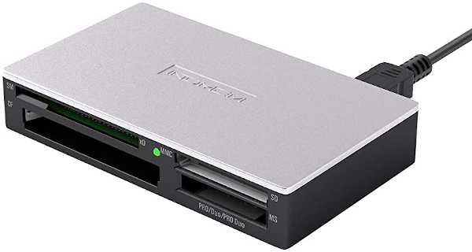
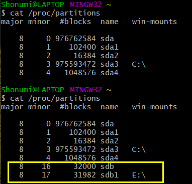
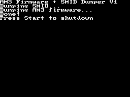
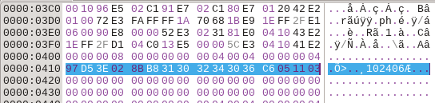

Getting Started
This document will serve as a quick how-to on dumping and preserving AM3's SmartMedia cards, used in conjunction with the Advance Movie Adapter. To begin, there are three pieces of data that must be extracted:
The first two, SmartMedia Card Data and SmartMedia Card ID, are necessary to archive the videos themselves. The firmware is necessary for the purposes of emulation.
Dumping SmartMedia Card Data - Overview
To dump the SmartMedia Card Data, first obtain hardware capable of reading standard SmartMedia cards. This may require purchasing a second-hand reader, as the SmartMedia format has been obselete for well over a decade. Many older printers may still have a built-in slot capable of reading these cards. SmartMedia cards are evidently not well supported by many products today, but some newer devices can still read them, such as INDMEM's multi-card reader.

Be sure to check eBay and other sites as well for cheap card readers!
Note that while it is possible to dump most of the SmartMedia Card Data through GBA or NDS homebrew or standard ROM dumpers like the GBxCartRW, all data pertaining to the File Allocation Table lost. Therefore, it is not possible to completely dump all of binary data found on the card without a dedicated SmartMedia card reader.
Once the SmartMedia card reader hardware is connected to a PC, software must be used to create a 1:1 copy of the disk image. For Linux, the standard dd command can be used to create the image. For those on Windows, use an equivalent program. This guide will demonstrate MSYS2, as it provides its own version of the dd command that mirrors Linux usage.
Dumping SmartMedia Card Data - Instructions
First, identify the /dev/ device associated with the SmartCard reader. Open up a terminal for the command line on Linux, or open up a MSYS2 shell on Windows. Next make sure all unnecessary drives (such as external USB drives) have been disconnected to simplify the following process. Do not connect the SmartMedia card reader yet. Run the command below:
cat /proc/partitions
Take note of the output. Connect the SmartMedia card reader to the PC and insert the SmartMedia card into the correct slot. Run the above command again. If the card reader is working correctly, the command should show a new device listed. Look for the new entry and take note of the value in the NAME column. This is the ID of the SmartMedia card reader that will be used in the following command.

Here, the new device is labeled "sdb".
Once the ID of the card reader has been obtained, use it in the following command, replacing YOUR_ID_HERE with the appropiate value. Be careful with this command! Always make sure the output file (the "of=" part) does not point towards a storage device! Point it towards a file, such as a specific .bin or .img or something! If the file does not exist, the command will generate one.
dd if=/dev/YOUR_ID_HERE of=/home/some_user/somefile.bin status=progress
Wait for the command to finish, and now the SmartMedia Card Data should be dumped.
Dumping SmartMedia Card ID - Instructions
There are a total of 3 methods to dumping the SmartMedia ID. They are listed below in order of ease and accessibility. Choose the one that fits your needs.
OPTION #1: The simplest method is to use the NDS homebrew AM3 Firmware + ID Dumper. Insert the SmartMedia card into the Advance Movie Adapter, then insert the adapter into Slot-2 of the NDS. Run the homebrew software, and it will automatically dump ID into the file "SMID.KEY".

The easiest and most straightforward way is to use NDS homebrew, as it dumps both the firmware and SmartMedia ID.
OPTION #2: While normal GBA ROM dumpers cannot read all of the data on the SmartMedia card, they can dump the card's 16-byte ID. No special instructions are required; simply insert the SmartMedia card into the Advance Movie Adapter and perform a normal/automatic dump as if it were an ordinary cartridge. The ID can then manually be extracted with a hex editor. The ID occupies the bytes 0x410 through 0x41F.

Regular cart dumpers can read the SmartMedia ID as well with no special handling.
OPTION #3: Finally, the latest bleeding-edge versions of GBE+ (anything newer than January 19, 2022) is capable of dumping the SmartMedia ID automatically. This is the most complicated method as the feature is relatively new in GBE+. The Advance Movie Adapter's firmware calculates the correct values and temporarily stores them in RAM. As a result, GBE+ can pull these values and write them to a file. Ensure that the Advance Movie Adapter firmware is stored in GBE+'s data folder as such:
data/am3_firmware.bin
Make sure the Smart Media card has been dumped as well. Now launch GBE+ from the command line as such:
gbe_plus PATH_TO_SMART_MEDIA_CARD_DUMP_HERE --agb-am3 --auto-gen-key
GBE+ will then write the ID to .key file in the same directory as the Smart Media card dump.
Dumping Advance Movie Adapter Firmware - Instructions
Use the NDS homebrew AM3 Firmware + ID Dumper. Insert the adapter into Slot-2 of the NDS. Run the homebrew software, and it will automatically dump ID into the file "AM3_FIRMWARE.BIN". This step does not require the SmartMedia card at all.
As a note to technically minded individuals attempting to add firmware dumping support to products such as Sanni cart reader or GBxCart RW, refer to the documentation in Dan Docs for a complete overview/guide on the adapter's operation. For a tl;dr, set PHI Terminal Output to 16.78MHz, write to the I/O registers in the cart to read in the next 1KB block of firmware, then actually read the firmware at 0x8000000 through 0x80003FF.